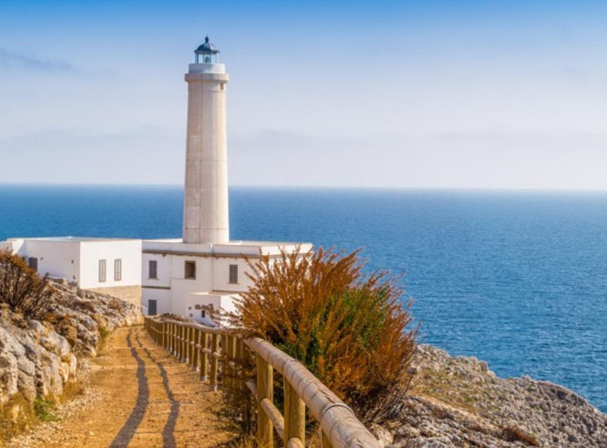

| Nome | Puglia |
| Capoluogo | Città metropolitana di Bari (BA) |
| Data di Istituzione | 1861** |
| Altitudine media | 184 m.s.l.m |
| Superficie | 19541 km^2 |
| Abitanti (giugno 2023) | 3.888.864 |
| Densità | 199 ab/km^2 |
| Comuni | 257 |
| Province | Foggia (FG), Barletta-Andria-Trani (BT), Lecce (LE), Taranto (TA), Brindisi (BR) |
| Confini | Molise, Campania, Basilicata, Mare Adriatico, Mar Ionio |
| Patrono | S.Nicola di Bari, S.Michele Arcangelo |
| PIL procapite (2019) | 19.900€ |
**Nel 1861 venne istituita la Puglia con solo le provincie di Foggia, Bari e Lecce. Nel 1948 vennero create le province di Brindisi e Taranto. Nel 2004 venne istituita la provincia di Barletta-Andria-Trani.
Numero 1: Borgo Antico di Vieste (FG)
Vieste è una suggestiva cittadina situata nel cuore del Gargano,
nella regione della Puglia, Italia.
Il suo borgo antico è un affascinante labirinto di stretti vicoli,
case bianche e scorci panoramici mozzafiato sul mare Adriatico.
Ecco alcune caratteristiche salienti del borgo antico di Vieste:
Architettura:
Le case del borgo antico sono tipicamente bianche, con dettagli in pietra locale.
Questo stile architettonico è tipico delle città costiere pugliesi e riflette
l'influenza dell'architettura mediterranea.
Stradine:
Il borgo è caratterizzato da stradine tortuose e scale che si snodano attraverso il centro
storico. Questo design labirintico è un richiamo alle antiche strutture difensive
della città.
Il Castello:
Dominante nel panorama del borgo antico, il Castello di Vieste è una fortezza normanna
che offre panorami spettacolari sulla città e sul mare circostante.
La sua costruzione risale al periodo normanno-svevo.
Chiese storiche:
Nel borgo antico troverai diverse chiese storiche,
alcune delle quali risalgono al periodo medievale.
Tra queste, la Cattedrale di Vieste è particolarmente significativa,
con la sua facciata romanica.
Vista mozzafiato:
Le strade più alte del borgo offrono viste panoramiche mozzafiato sul mare.
Questi punti panoramici sono ideali per ammirare il tramonto o semplicemente
godersi la bellezza del paesaggio marino.
Artigianato:
Nelle stradine del borgo antico, è possibile trovare piccole botteghe artigianali
che vendono prodotti locali, come ceramica, tessuti e oggetti realizzati a mano.
Il borgo antico di Vieste è un luogo che incarna la storia e la tradizione della regione,
offrendo al visitatore un'esperienza autentica e affascinante.
La sua bellezza architettonica e paesaggistica lo rende una tappa imperdibile per
coloro che esplorano la costa del Gargano.
Il borgo antico di Vieste.
Numero 2: Faro di Punta Palascìa - Otranto (LE)
Il Faro di Punta Palascìa, noto anche come Faro di Otranto,
è situato sulla punta più orientale dell'Italia, precisamente a Punta Palascìa,
vicino ad Otranto, in provincia di Lecce, nella regione della Puglia.
Ecco alcuni dettagli e informazioni su questo faro:
Posizione geografica:
Il Faro di Punta Palascìa si trova sulla costa adriatica,
nella parte più orientale della penisola salentina.
La sua collocazione lo rende il faro più orientale d'Italia.
Costruzione:
Il faro è stato costruito nel XIX secolo, precisamente nel 1867,
durante il periodo del Regno d'Italia.
La sua costruzione era volta a migliorare la sicurezza della navigazione
lungo la costa.
Caratteristiche tecniche:
Il faro ha un'altezza di circa 47 metri ed è situato su una scogliera a picco sul mare.
La sua luce, visibile fino a 35 miglia marine, è bianca con una caratteristica sequenza di lampeggi.
Ruolo nella navigazione:
Il Faro di Punta Palascìa ha svolto un ruolo cruciale nella sicurezza
della navigazione nel Mar Adriatico, segnalando la vicinanza delle coste rocciose e
fungendo da punto di riferimento per le imbarcazioni.
Panorama e attrattività turistica:
Oltre alla sua funzione pratica, il faro offre anche un panorama spettacolare sull'Adriatico.
La zona circostante è caratterizzata da scogliere e paesaggi naturali suggestivi,
attirando turisti e visitatori interessati sia alla storia marittima che alla
bellezza paesaggistica.
Simbolo dell'estremo oriente italiano:
Punta Palascìa è spesso considerata il punto più orientale d'Italia,
e il Faro di Punta Palascìa simboleggia questo estremo geografico.
Molti visitatori si recano al faro per poter dire di aver raggiunto il punto più a
est della penisola italiana.
Il Faro di Punta Palascìa è dunque non solo un elemento pratico per la
navigazione ma anche un'icona che rappresenta l'estrema punta orientale dell'Italia,
con il suo fascino storico e la sua spettacolare posizione sul mare.

Il faro di Punta Palascìa.